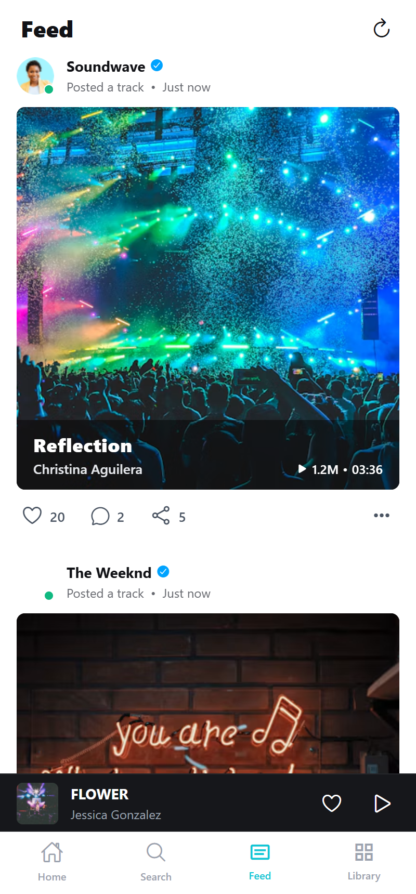

Giai đoạn 3 – Bảng tin (dùng lại giao diện Feed hiện có)
BẢN XEM TRƯỚCBẢN 2Mockup để duyệt trước khi code. Ảnh, màu, cỡ chữ, thẻ bài đăng, sheet bình luận, nút ♡ 💬 ⋯ lấy theo đúng Feed đang chạy. Chỗ có nhãn MỚI là phần được thêm.
Thay đổi so với bản 1 (theo góp ý "tận dụng Feed hiện có"):
Nghệ sĩ đăng bài ngay trên màn Feed (thanh "What's new…" ở đầu Feed), không cần màn soạn bài riêng trong Studio.
"Bài đăng của tôi" chính là màn Feed lọc theo nghệ sĩ, dùng lại thẻ bài đăng có sẵn; sửa / xoá qua nút ⋯ đang có ở mỗi bài.
Viết bài dùng sheet trượt lên giống sheet bình luận hiện tại; trả lời bình luận dùng đúng sheet bình luận, chỉ thêm nhãn Artist.
Thông báo dùng đúng màn Notifications hiện có, thêm 2 loại dòng.
0. Feed hiện tại (để so sánh)

Đây là ảnh chụp màn Feed đang chạy. Giai đoạn 3 giữ nguyên các phần sau:
tiêu đề "Feed" và nút làm mới;
dòng tác giả (ảnh, tên, tick xanh, "Posted a track · thời gian");
thẻ bài hát (ảnh lớn, dải tối ghi tên bài / ca sĩ / lượt nghe / thời lượng);
hàng nút ♡ 💬 chia sẻ ⋯, mini player, thanh tab.
Chỉ thêm:
tab For you / Following;
dòng chữ của bài đăng (nằm trên thẻ bài hát);
bài chỉ có chữ (không có thẻ bài hát);
thanh đăng bài cho nghệ sĩ;
mục Edit / Delete trong menu ⋯ với bài của chính mình.
1. Quy tắc
Chỉ nghệ sĩ thấy thanh "What's new…" và đăng được bài. Người nghe vẫn thích, bình luận, chia sẻ như hiện tại.
Bài đăng có chữ (1–1000 ký tự) và/hoặc 1 bài hát đã đăng của chính nghệ sĩ; không được trống cả hai. Tối đa 10 bài / ngày.
Người theo dõi nhận thông báo khi nghệ sĩ đăng bài hoặc đăng bài hát mới (mỗi bài hát chỉ báo 1 lần).
Sửa bài thì bài ghi "· edited". Xoá bài thì xoá cả bình luận, có hỏi xác nhận. Bài hát gắn kèm bị ẩn thì thẻ bài hát hiện "Song unavailable".
Bình luận của nghệ sĩ dưới bài của chính họ có nhãn ✓ Artist và nền xanh nhạt.
2. Màn hình
9:41●●● 100%
Feed
For you
Following
MỚI
AS
What's new, Ashley?
Post
MỚI
Soundwave
Posted a track • 3d
ReflectionChristina Aguilera
▶ 1.2M • 03:36
2025···
FLOWERJessica Gonzalez
Home
Search
Feed
Library
F1 · Feed khi đăng nhập bằng nghệ sĩ
Giữ nguyên Feed hiện tại. MỚI 2 tab For you / Following ngay dưới tiêu đề. MỚI Thanh "What's new, Ashley?" ở đầu danh sách, chỉ tài khoản nghệ sĩ mới thấy; bấm vào mở sheet viết bài (F2).
9:41●●● 100%
Feed
New postAshley S. · to your 28 followers
So excited to share "Mùa thu Hà Nội" with you all! Recorded it on a rainy night last October 🍂
98 / 1000
Mùa thu Hà NộiAshley S. · 03:20
Attach one of your songs
One published song per post (optional).
Post
F2 · Viết bài (sheet trượt lên)
Cùng kiểu với sheet bình luận đang có: góc bo, tiêu đề, nút ✕, khu nhập liệu ở dưới. Gồm ô chữ có đếm ký tự, gắn 1 bài hát (bấm "Attach…" để chọn trong các bài đã đăng; khi đã gắn thì nút này mờ đi), nút Post. Đăng xong bài hiện ngay đầu Feed.
9:41●●● 100%
Feed
For you
Following
AS
Ashley S.
Posted a track • 2h
So excited to share "Mùa thu Hà Nội" with you all! Recorded it on a rainy night 🍂MỚI
Mùa thu Hà NộiAshley S.
▶ 1.2K • 03:20
1243812···
AS
Ashley S.
Shared an update • 3d · edited
Thank you for 1,000 plays! Working on something new for December ✨MỚI
5631
Home
Search
Feed
Library
F3 · Tab Following, bài có chữ và bài chỉ có chữ
Thẻ bài vẫn như cũ. MỚIChữ của bài nằm giữa dòng tác giả và thẻ bài hát. MỚI Bài chỉ có chữ ("Shared an update") dùng cùng dòng tác giả và hàng nút, chỉ không có thẻ bài hát. Bấm tên hoặc ảnh tác giả để mở trang nghệ sĩ.
9:41●●● 100%
Feed
AS
Ashley S.
Posted a track • 2h
So excited to share "Mùa thu Hà Nội"…
Edit postMỚI
Delete postMỚI
Add song to playlist
Share song
Cancel
F4 · Nút ⋯ trên bài của chính mình
Dùng lại menu ⋯ đang có ở mỗi bài (hiện mở các thao tác với bài hát). MỚI Với bài của chính nghệ sĩ thì thêm 2 dòng đầu: Edit post (mở lại sheet F2 với dữ liệu cũ) và Delete post (hỏi xác nhận, xem F5). Với bài của người khác, menu giữ như cũ.
9:41●●● 100%
Feed
AS
Ashley S.
Posted a track • 2h
Delete this post?
The post and its 38 comments will be removed. Your song stays in My songs.
Delete post
Cancel
F5 · Xác nhận xoá bài
Dùng cùng kiểu hộp xác nhận với "Delete playlist?" đang có. Ghi rõ số bình luận sẽ bị xoá theo, và nói rõ bài hát không bị xoá.
9:41●●● 100%
Feed
38 commentsMùa thu Hà Nội • Ashley S.
Jason Smith The chorus gave me chills 😭 any acoustic version coming?
1h12 likesReply
AS
Ashley S.✓ Artist@Jason Smith Yes!! Recording it next week, stay tuned 🎸
20m30 likesReply
Sally Lee Nghe đi nghe lại cả ngày không chán ❤️
3h8 likesReply
Michael Đây là bài hay nhất năm nay 🔥
5h3 likesReply
AS
Write a comment...
F6 · Sheet bình luận (có sẵn) + nhãn Artist
Giữ nguyên sheet bình luận: tiêu đề "N comments", tên bài, dòng "Tên + nội dung", "thời gian · likes · Reply", trả lời có @tên, ô "Write a comment...". MỚI Bình luận của chính nghệ sĩ có nhãn ✓ Artist và nền xanh nhạt.
9:41●●● 100%
NotificationsMark all read
AS
Ashley S. released a new song: Sunday Morning 🎵
5m
MỚI
AS
Ashley S. posted: "So excited to share "Mùa thu Hà Nội" with you all!…"
2h
MỚI
Ashley S. replied to your comment
"Yes!! Recording it next week, stay tuned 🎸"
20m
F7 · Màn Notifications (có sẵn) + 2 loại mới
Dùng lại màn Notifications và kiểu dòng hiện tại (nền xanh khi chưa đọc, chấm đỏ). MỚI "released a new song": bấm vào thì phát bài. MỚI "posted": bấm vào thì mở Feed, cuộn tới bài và nháy sáng bài đó, giống thông báo bình luận đang làm.
9:41●●● 100%
Upload a song
sunday-morning.mp35.1 MB · duration is read automatically
Title *
Sunday Morning
When ready
● Publish now
Everyone can listen
Share to feed
Post "New song out now!" with this song
MỚI
Your 28 followers will be notified when the song is published.
Giữ nguyên màn tải bài. MỚI Công tắc "Share to feed" (mặc định bật, chỉ hiện khi chọn Publish now): tải xong tự đăng một bài kèm bài hát lên Feed. Người theo dõi luôn nhận thông báo "bài hát mới".
9:41●●● 100%
My posts
AS
What's new, Ashley?
Post
AS
Ashley S.
Posted a track • 2h · edited
So excited to share "Mùa thu Hà Nội" with you all!
Mùa thu Hà NộiAshley S.
▶ 1.2K • 03:20
1243812···
AS
Ashley S.
Posted a track • 1w
Old song is back soon…
Song unavailable
F9 · "My posts" = Feed lọc theo nghệ sĩ
Không làm màn mới: mục Posts trong Artist Studio (và "See all posts" trên trang nghệ sĩ) mở chính màn Feed, chỉ lọc bài của nghệ sĩ đó, tiêu đề đổi thành "My posts" hoặc tên nghệ sĩ. Bài có bài hát đã bị ẩn thì thẻ bài hát hiện "Song unavailable".
3. Phần sẽ làm khi hiện thực
Hạng mục
Chi tiết
Server
POST / PUT / DELETE /api/feed/posts (chỉ nghệ sĩ, chỉ bài của mình; giới hạn 10 bài / ngày; xoá thì xoá cả bình luận);
GET /api/feed/posts?scope=following | artistId=;
bình luận trả cờ isArtist;
thông báo artist_new_post và artist_new_song gửi cho người theo dõi (mỗi bài hát chỉ báo 1 lần);
tải bài nhận thêm shareToFeed.
App (sửa màn có sẵn, không thêm màn mới)
FeedScreen: thêm tab, thanh đăng bài, chữ của bài, bài chỉ có chữ, chế độ lọc theo nghệ sĩ.
Mới (component):ComposePostSheet (F2), dùng chung kiểu sheet với bình luận.
Menu ⋯: thêm Edit / Delete cho bài của mình.
FeedComments: nhãn Artist.
Notifications: 2 loại mới.
UploadSong: công tắc Share to feed.
ArtistStudio và ArtistProfile: lối vào "My posts" / "See all posts".
Kiểm thử
Unit: kiểm tra bài đăng.
Integration:
quyền đăng / sửa / xoá; giới hạn 10 bài;
gắn bài hát của người khác hoặc bài nháp → chặn;
thông báo chỉ tới người theo dõi; bài hát mới chỉ báo 1 lần;
tab Following đúng.
E2E: nghệ sĩ đăng bài trên Feed → người nghe nhận thông báo, mở bài, bình luận → nghệ sĩ trả lời có nhãn Artist.
4. Cần bạn xác nhận
Nghệ sĩ đăng bài ngay trên Feed (thanh "What's new…"), và "My posts" là Feed lọc theo nghệ sĩ. Bạn đồng ý không?
Có làm 2 tab For you / Following không?
Chưa làm đính kèm ảnh vào bài đăng (chỉ chữ + bài hát). Được không?
Giới hạn 10 bài / ngày, luôn báo khi có bài hát mới, và "Share to feed" mặc định bật. Bạn đồng ý không?